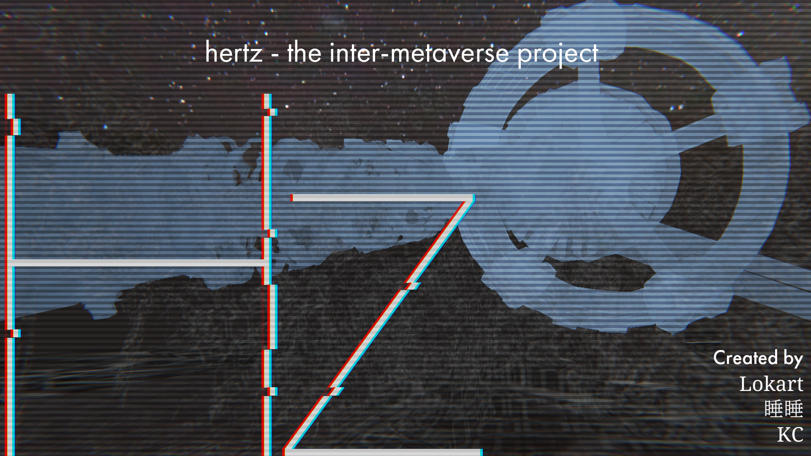

Hz
IVRC2023 メタバース部門 総合優勝・特別審査員賞 Voxel Kei賞

Overview
IVRC2023 メタバース部門に出展したVR作品です。総合優勝および特別審査員賞（Voxel Kei賞）を受賞しました。
Team & Role
Tech Stack
Unity, C#, PUN2, VR / XR
Media


IVRC2023 メタバース部門 総合優勝・特別審査員賞 Voxel Kei賞

IVRC2023 メタバース部門に出展したVR作品です。総合優勝および特別審査員賞（Voxel Kei賞）を受賞しました。
Unity, C#, PUN2, VR / XR